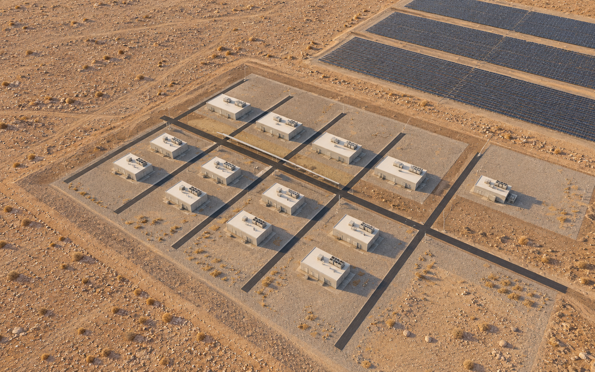
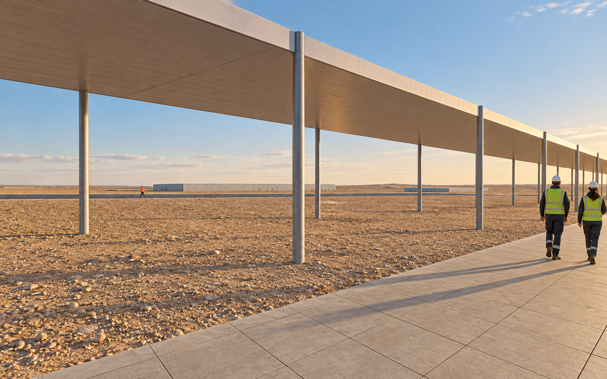

AGUA FINITA
V11 / Continuous living districts and independent production
Authorised public design preview. The images and plans show a proposal; independent engineering, rights and design review remain open.
 Centre district / local aerial. This camera frame does not define the whole-site design scope.
Centre district / local aerial. This camera frame does not define the whole-site design scope.1. Design thesis
Housing forms continuous precincts with daily services. A compact town centre supports shared public life. Computing, repair and utilities occupy a separate productive estate; proximity alone is not a benefit.
2. Full-site zoning
Six proposed regions cover the issued boundary: Z1 southwest urban/services; Z2 northwest agricultural research; Z3 northern energy research; Z4 central production/transfer; Z5 eastern gateway/logistics; Z6 southeast mountain stewardship. Gross regions are not construction land. Fixed pilot outlines remain unchanged. Base zoning and overlapping system context are separate accounts.
 Current geometry-based spatial diagram / symbols and widths are explanatory.
Current geometry-based spatial diagram / symbols and widths are explanatory.3. Regional movement
Primary and secondary corridor studies connect the southwest, northern service hub, conditional transfer sites and eastern gateway. Arrival and freight approaches remain unacquired studies. Terrain, channel crossings, rights and emergency operation require specialist design.
4. Complete urban layout
All three construction phases share continuous R precincts and C town centre. Designed full-build-out capacity is 10,240 dwellings and a 25,600 resident scenario at 2.5 people per dwelling; release is conditional on demand and resources. The separate P/S system is not moved beside housing to compose an image.
 Current geometry-based spatial diagram / symbols and widths are explanatory.
Current geometry-based spatial diagram / symbols and widths are explanatory.5. Streets and public transport
Primary/secondary distributors, local streets, a proposed passenger spine, public anchors and court routes are shown distinctly. The productive worker path parallels the service spine; yard-spur crossing control remains a design hold-point.
 Current geometry-based spatial diagram / symbols and widths are explanatory.
Current geometry-based spatial diagram / symbols and widths are explanatory.6. Landscape and shade
Dry parks, a source seasonal wash and proposed walking/engineered-shade links form the landscape diagram. Green symbols are not evidence of irrigated forest, lawns or permanent water. Targeted planting requires a verified reuse allocation.
 Current geometry-based spatial diagram / symbols and widths are explanatory.
Current geometry-based spatial diagram / symbols and widths are explanatory.7. Public space and services
Four education plots and phased daily-service anchors support the living district. The assumed full-build-out education need is 3,840 places and the design provides 4,320 places. Block-gate network walking tests do not establish safe door-to-door access.
8. A03 market commons
Public space in heat and Zonda wind is tested at the town centre: two long market/refuge halls, an 80 x 80 m commons and two open shade bands. Aerial and eye-level images share registered source cameras.
A03 / aerial / AI-finished concept image from a geometry-derived control. A03 / eye / AI-finished concept image from a geometry-derived control.
A03 / eye / AI-finished concept image from a geometry-derived control. 9. B03 compute and repair
Eight staged compute halls and four repair workshops occupy their own productive estate. IT expands through 2, 4 and 8 MW scenarios only after resource and demand gates. No unverified residential heat network is credited.

B03 / aerial / AI-finished concept image from a geometry-derived control.
B03 / eye / AI-finished concept image from a geometry-derived control.10. C03 seasonal wash edge
Dry-season visitor access uses an edge path and a removable shade point. Access closes on warnings. The image is a local visitor-edge crop of the larger seasonal-wash study, not a lake or a surveyed flood design.
 C03 / aerial / AI-finished concept image from a geometry-derived control.
C03 / aerial / AI-finished concept image from a geometry-derived control. C03 / eye / AI-finished concept image from a geometry-derived control.
C03 / eye / AI-finished concept image from a geometry-derived control.11. Construction phases
Phase 1 independently operates housing, essential services and production. Phase 2 extends connected precincts only with demand and audited resource headroom. Phase 3 completes northern housing and activates the gateway only after its independent access, trade, utility and worker-welfare case.
12. Resources and livelihoods
The new Phase 1 programme has a declared fresh requirement of 409,590 m3/year. Fixed-pilot and existing living-quarter demand remain additional and unverified. Employment figures describe programme capacity, not contracted jobs or a demonstrated household income base.
13. Presentation and trade-off
The A0 uses spatial diagrams and concise phase cards, with no spreadsheet-style account. Detailed figures remain in the booklet and technical records. The scheme gives up maximum uninterrupted IT throughput and the shortest productive route to protect continuous public life and honest resource limits.
14. Review and disclosure
Jingyuan Huang authorised this public preview. Codex created the geometry, calculations, diagrams and layout; built-in image_gen.imagegen finished the selected source-controlled images, with exact model version unavailable. Images illustrate design, not measurements or approval. Original controls, prompts, cameras and rejected trials remain traceable. Automatic gates and independent design assessment are distinct; this draft is not submitted as approved.